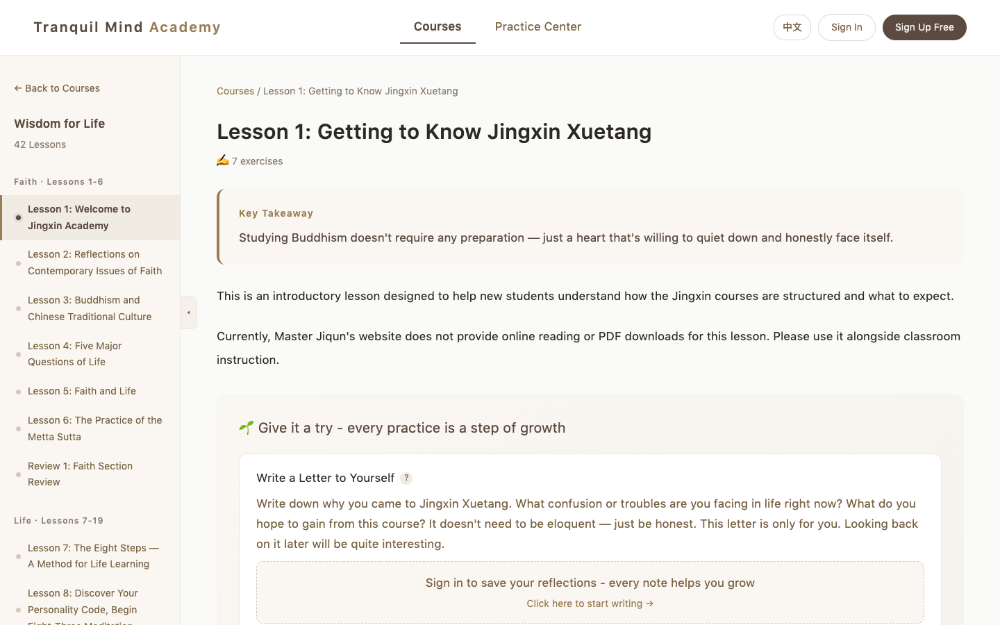
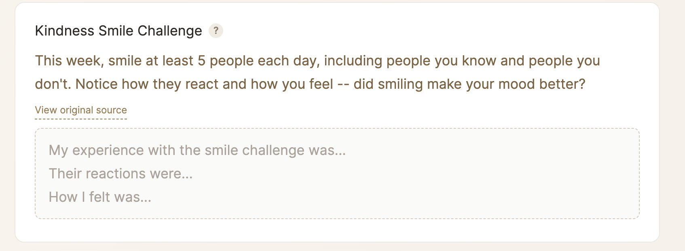
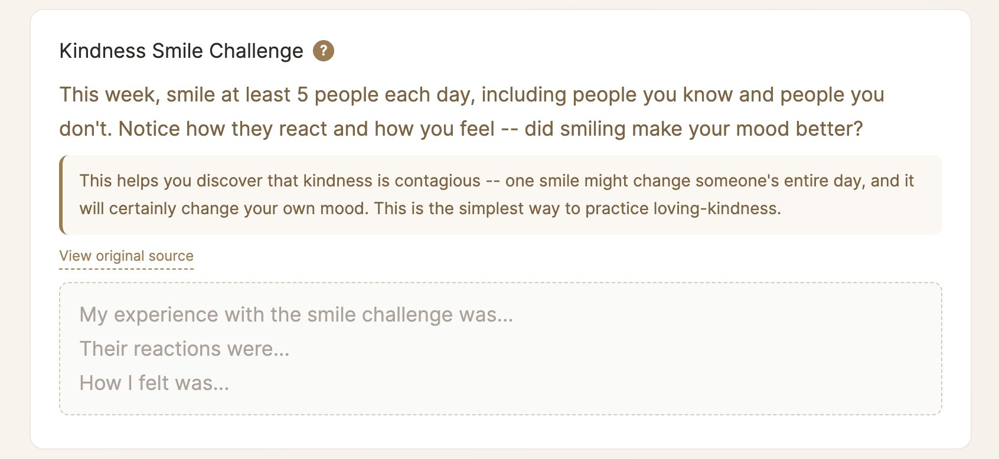
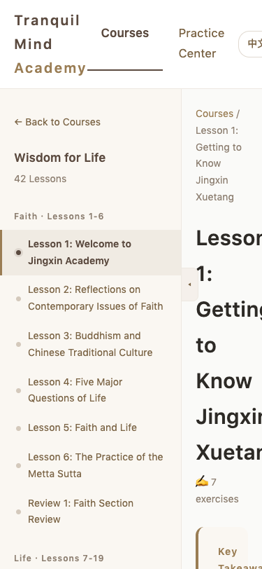
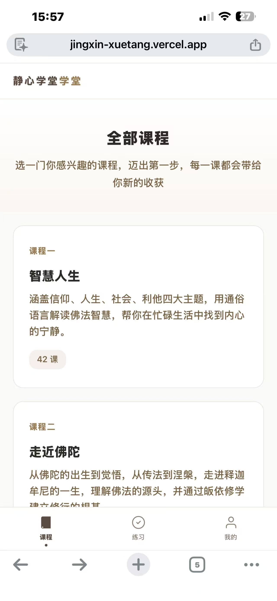
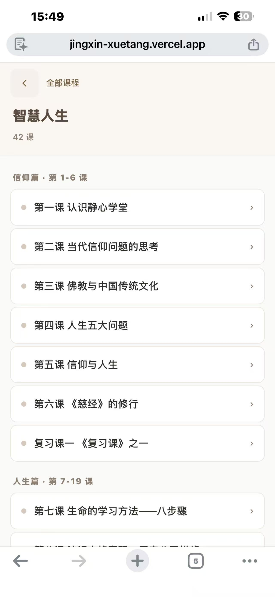
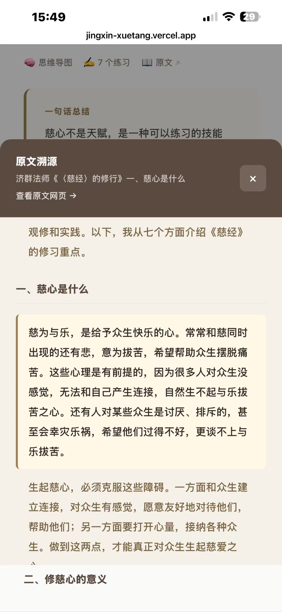
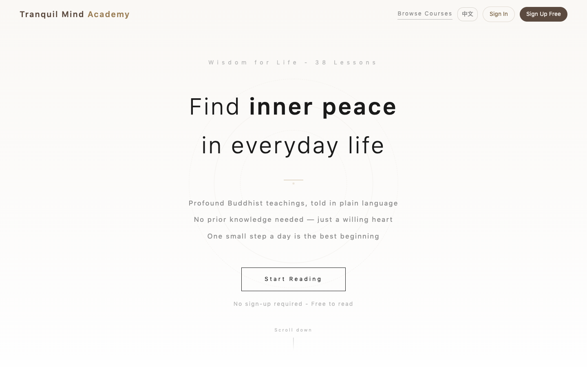
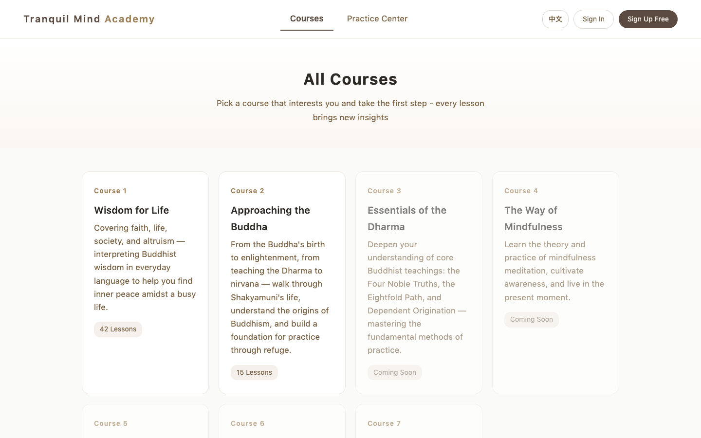
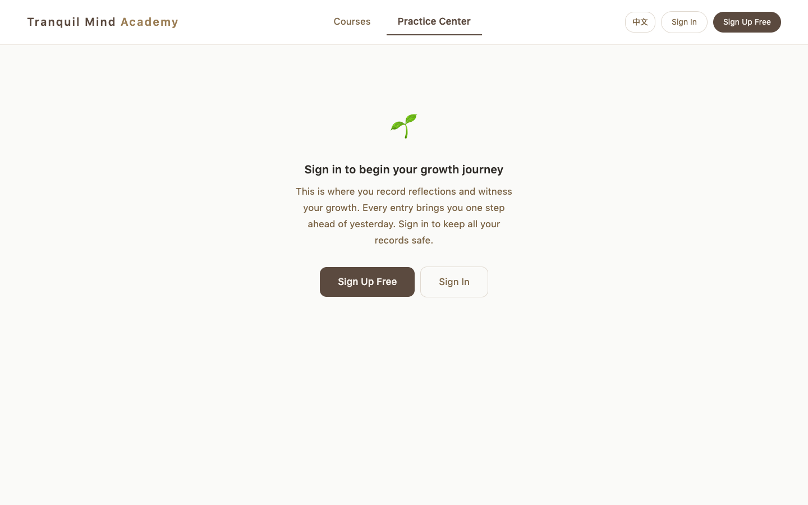

I noticed 50%+ dropout in Buddhist study groups because materials were too academic. I researched the root causes, wrote a comprehensive PRD, then used AI vibe coding to design and ship a full-stack learning platform — now serving real users.
Master Jiqun's Buddhist courses are studied in community groups across China. But more than half of students leave within the first few sessions.
I observed this firsthand in my own study community — out of 5 study groups, 4 had lost roughly half their members. Through conversations with students and group leaders, I identified three root causes:
Original texts use classical Buddhist language with dense terminology. Even educated adults said "I need to read it 3 times to understand."
After reading a 3,000-word lesson, students couldn't articulate what they learned in one sentence.
Buddhism emphasizes applying teachings to daily life, but courses only provided theory. Students read, nodded, and then... did nothing different.
This created a vicious cycle:
Before touching any tool, I spent time observing study groups and talking to students and leaders. I then wrote a 746-line Product Requirements Document — covering user personas, feature specs, a design system, and accessibility standards. Everything that followed was built on this foundation.
I identified three distinct user personas, each with fundamentally different needs:
Just joined out of curiosity. No Buddhist background. Overwhelmed by terminology. Needs simplified language and clear takeaways.
Been in a group for a few months. Attends sessions but rarely reviews between meetings. Wants quick recaps and practical exercises.
Deeply committed, studied for 1+ years. Values accuracy and wants to cross-reference simplified content with originals.
These three personas shaped every design decision that followed. Each feature had to answer: which persona does this serve, and how?
Challenge: Buddhist texts use precise classical language developed over 2,500 years. Oversimplifying risks distorting the teaching. But keeping it academic means students can't learn.
Insight: My three personas have three distinct reading modes — quick scanning, deep learning, and accuracy verification. One content format can't serve all three.
Solution: A three-layer content architecture — each layer designed to serve a specific persona.
Plain language with life analogies (e.g., explaining "attachment" through phone addiction).
Each lesson distilled into one memorable sentence + 3–5 key points. The core insight you should walk away with.
Click any simplified passage to see the original text, displayed in a resizable side panel.
Three personas, three reading modes, one unified interface.

Challenge: Students read lessons but couldn't apply teachings to daily life. Buddhism is about practice, not memorization.
Insight: The Casual Learner — who attends but rarely reviews — needs practical reasons to keep showing up. Abstract theory isn't enough.
Solution: A practice system where each lesson ends with concrete exercises tied to real life.
For example, after a lesson on compassion: "This week, think of someone you find difficult. Silently wish them well for 3 minutes before bed. Write down how it felt."

But giving users exercises isn't enough — they need to understand why each practice matters. I added a "?" icon next to each exercise that reveals the reasoning. This progressive disclosure keeps the interface action-focused while giving curious learners a path to deeper understanding.

Challenge: Students needed to reflect on personal spiritual growth, but were embarrassed to share publicly.
Insight: Through observation, I noticed students avoided journaling when they knew others could see their reflections. Spiritual growth feels deeply personal.
Solution: Two design choices that respect cultural context.
4-tier privacy controls for journaling (private / classmates / teacher / everyone). Defaulting to "private" with opt-in sharing removed the barrier and increased participation.
"随喜赞叹" (Suixi Zantan) — replaced generic "likes" with a Buddhist concept of rejoicing in others' good deeds. This culturally meaningful interaction created authentic engagement aligned with users' values.
Unlike a Figma prototype, this is a real, shipped product with user authentication, a database, and bilingual support. I used AI vibe coding with my detailed PRD as the blueprint — 70 commits over 4 days, each one a cycle of describe → review → refine. My role throughout was creative director, reviewing every output and giving feedback like a design review.
Try it yourself below — browse courses, read simplified lessons, and explore the practice center.
Buddhist study often happens on phones — commuting, before bed. I designed a mobile-first experience with bottom tab navigation and touch-optimized interactions.







User research revealed 50%+ dropout was driven by content comprehension, not motivation — reframing the entire solution direction
Privacy-first journaling and culturally meaningful interactions increased community participation
From user research to live product serving real users — designed, built, and launched end-to-end
"This is SO cool — clean, clear, and feels immediately usable. The website design is beautiful, it really captures the Zen spirit. The one-sentence summaries and practice exercises are brilliant. I think this could become a real learning tool for our community."
"Yes! After the rewrite it's so much easier to understand. Appreciating your effort!"
"This is truly a great approach! I just opened it and it really is much more accessible and easy to understand. You put so much heart into this!"
End-to-end ownership changes how you design. Owning the full journey — from user research, to PRD, to design system, to shipped product — forced me to make tighter decisions. When you're accountable for the final experience, not just the mockup, every detail matters more.
Start with the community, not the technology. I spent time observing study groups before writing a single requirement. The best features (like practice privacy controls) came from understanding social dynamics, not technical possibilities.
Vibe coding is a design tool, not a replacement for designers. AI writes code, but it can't decide what to build or why one layout works better than another. A clear PRD and strong design instincts are what make vibe coding productive — without them, you just ship faster in the wrong direction.
Ship early, learn from real users. A live product with 10 real users teaches more than a polished prototype with zero users. The practice sharing feature was redesigned based on early user behavior.